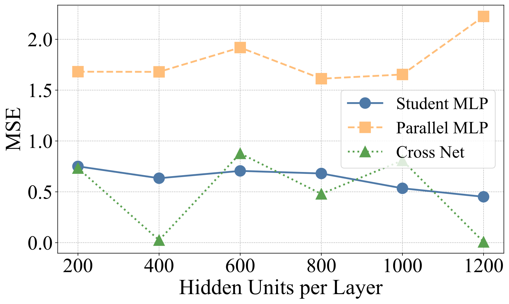
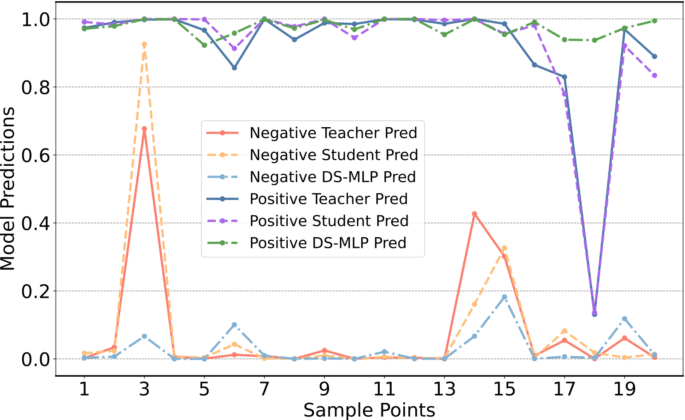
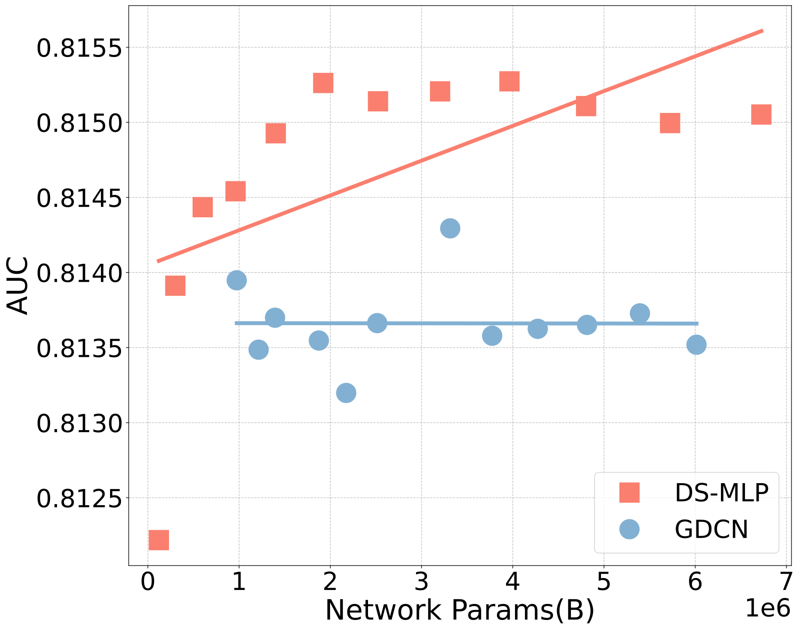

Contents · 11 sections
1What problem is it solving?2The big picture first3Step one: distil the teacher's explicit crosses into a three-layer MLP4Step two: add a parallel MLP and use two alignments to put the streams on equal footing5Results: how big is the lead, and does it count?6Does it work with a different teacher?7Ablation: which part is doing the work?8Does a bigger model help?9Limitations as I see them10How a ranking team could try it11VerdictSHARE
Teams maintaining CTR ranking models who are worn out by ever more elaborate feature-crossing structures should read this, but should not expect a big gain. The problem it tackles: mainstream CTR models (DeepFM, DCNv2, GDCN (Gated Deep Cross Network) and others) are "dual-stream": one stream builds feature crosses explicitly with multiplication, the other learns them implicitly with an MLP, and the two outputs are simply added. The more complex the structure, the harder it is to tune, and the multiplicative stream's output grows with the crossing order, so when the two are added it tends to overwhelm the MLP stream. DS-MLP's finding is that the deployed model needs only two plain MLPs. One MLP learns the teacher model's explicit crosses through knowledge distillation, the other learns from scratch and covers patterns the teacher misses; both streams first go through batch normalization and are then each supervised with the click label, so neither can overwhelm the other. Compared against 17 baselines on Criteo, Avazu and MovieLens, DS-MLP ranks first in AUC on all three, but the margins are small, and on the first two datasets they are below the paper's own significance threshold.
What problem is it solving?
The input to CTR prediction is a set of discrete features: user ID, gender, ad category, device, time of day and so on. A single feature carries little information; what matters is combinations, such as "10 pm + mobile + game ads". How to learn these combinations has been the main thread of CTR modelling for the past decade.
The trade-offs of the two ways of learning them:
| Approach | How it works | Representative models | Problem |
|---|---|---|---|
| Explicit crossing | Build feature combinations directly with inner products or element-wise multiplication; stacking layers raises the crossing order | FM, CrossNet, DCNv2 | Higher orders mean more complex, harder-to-tune structures; multiplication makes output values grow with order |
| Implicit crossing | Concatenate all features and pass them through an MLP that learns the combinations itself | DNN, FinalMLP | Hard to say what it has learned; the authors argue it alone does not learn explicit combinations well |
| Dual-stream (sum of both) | Two streams in parallel, outputs added | DeepFM, xDeepFM, GDCN | The streams differ greatly in structure and output scale, so one tends to overwhelm the other |
The authors call the third row's problem imbalanced fusion: the explicit stream multiplies element-wise, so high-order crosses keep growing in magnitude; the MLP stream passes through activations like ReLU and its outputs stay bounded. When the two are added, the explicit stream dominates the final prediction.
The big picture first

Training has two steps, and only the two MLPs are kept for serving:
| Stage | What happens | What is trained |
|---|---|---|
| 0. Prepare the teacher | Train a strong CTR model the usual way (GDCN for Criteo, DCNv2 for Avazu, FinalMLP for MovieLens) | Teacher |
| 1. Distil | Freeze the teacher; the student MLP fits both the click label and the teacher's predictions | Student MLP |
| 2. Alignment fine-tuning | Add the parallel MLP, apply batch normalization to both streams' hidden layers; total loss = cross-entropy of the fused prediction + each stream's own cross-entropy | Both MLPs together |
| Serving | Average the two logits and apply a sigmoid to get the click probability | Only two MLPs, no teacher |
Step one: distil the teacher's explicit crosses into a three-layer MLP
What each layer of the teacher GDCN does can be understood like this: multiply the original feature vector element-wise with the previous layer's result to get combinations one order higher, multiply by a sigmoid gate that filters out useless combinations, and add the previous layer back. Stacking L layers gives crosses of order L+1. The final prediction is this cross network's output plus the output of an ordinary DNN (a deep fully connected network, structurally an MLP).
The student is a three-layer MLP, wider than the 400 units the baselines typically use: 600 per layer on Criteo, 900 on Avazu and 1000 on MovieLens. The loss is click cross-entropy plus λ times the distillation loss, with λ = 1.0 on Criteo and Avazu and 0.5 on MovieLens.
Why can an MLP learn a multiplicative structure? Section 3.5 offers a theoretical argument: an MLP is a universal function approximator, so with enough capacity it can approximate the teacher's output; assuming the functions are smooth enough, close outputs imply close second derivatives, and the second-order mixed partial derivative is exactly what measures the interaction strength between two features. The premises (smoothness, convergence of over-parameterised optimisation) cannot be verified in actual training, so the argument shows the MLP "can" learn the crosses, not that it "will".
The authors ran a more direct check in the experiments: use the teacher GDCN to generate labels on three synthetic features and see who can fit these explicit crosses.

This figure shows two things. First, the student's error is much lower than the parallel MLP's, showing distillation does transfer the teacher's crossing patterns, while the parallel MLP did not learn from the teacher and is left free to learn something else. Second, CrossNet's own error swings up and down, which is exactly the authors' point that explicit structures are hard to optimise, whereas the MLP curve is much steadier.
Step two: add a parallel MLP and use two alignments to put the streams on equal footing
In preliminary experiments the authors found that the teacher is itself an imbalanced dual-stream model whose explicit stream dominates its predictions, so what the student distils is mainly the explicit crosses and the implicit part gets neglected. The fix is to add a parallel MLP dedicated to implicit crosses. This parallel MLP does not use the teacher's feature embeddings but learns them from scratch, because its job is not to imitate the teacher.
The two streams are trained differently, so their outputs can differ a lot, and simply adding them brings back the old problem of one stream overwhelming the other. The authors use two alignments:
| Alignment | How | What it fixes |
|---|---|---|
| Hidden-state alignment | Apply batch normalization to both streams' hidden layers, standardising each dimension by in-batch mean and variance | Both streams' outputs fall in a similar numeric range, so neither dominates by sheer magnitude |
| Prediction alignment | Besides the fused prediction's cross-entropy, compute a separate click cross-entropy for each stream, weighted by α and β | Each stream must be able to predict clicks on its own rather than lean on the other |
α and β should be neither too large nor too small. The authors swept α between 0.5 and 1.5 and results peaked around 1. This is because when α is too large the two streams are forced to be nearly identical and lose their complementarity; when it is too small the alignment is insufficient. The final α chosen per dataset lies between 0.8 and 1.5 and β between 0.6 and 1.2, showing these weights need tuning per dataset.
What does the parallel MLP actually add? The authors picked 20 samples and plotted each model's predictions:

This example shows one cost of distillation: the student learns the teacher's mistakes along with everything else. The parallel MLP is not influenced by the teacher and can pull predictions back on these samples. But these are 20 hand-picked samples, so treat them as an illustration; they say nothing about how often such corrections happen overall.
Results: how big is the lead, and does it count?
The experiments follow the settings of BARS (an open, reproducible CTR benchmark): embedding dimension 10, batch size 4096, and three-layer 400-unit MLPs for the baselines. The metrics are AUC (the probability that, for a random clicked and a random non-clicked sample, the model ranks the clicked one higher) and LogLoss (cross-entropy between predicted probabilities and actual clicks, lower is better). The paper's table header states that 0.001 higher AUC or 0.001 lower LogLoss counts as significant for CTR. Two baselines appear in the table below: FCN (Fusing Cross Network, a 2024 model that combines linearly and exponentially growing crossing subnetworks) and Final (a 2023 factorized-interaction-layer model that uses a modified linear layer to learn second-order crosses explicitly; it is a different model from FinalMLP).
| Dataset (instances) | Strongest baseline AUC | DS-MLP AUC | Gap | DS-MLP latency / fastest strong baseline latency (ms) |
|---|---|---|---|---|
| Criteo (45.84M) | FCN 0.8149 | 0.8152 | +0.0003 | 59.43 / Final 25.56 |
| Avazu (40.43M) | Final 0.7664 | 0.7670 | +0.0006 | 25.89 / Final 19.26 |
| MovieLens (2.01M) | Final 0.9717 | 0.9752 | +0.0035 | 2.65 / Final 2.29 |
By the paper's own 0.001 standard, DS-MLP's lead over the strongest baseline is below the significance line on both Criteo and Avazu; only on MovieLens is it a clear improvement. The paper reports no standard deviations over multiple runs and no significance tests, so a gap like 0.0003 may well sit within random-seed noise.
On latency, DS-MLP takes 59.43 ms on Criteo, close to FinalMLP's 56.71, but more than twice as slow as Final and DeepFM, and slower than the teacher GDCN's 45.02. The reason is easy to see: a 600-wide student plus a parallel MLP is not cheaper to compute than GDCN. The paper's "simple and efficient" refers more to a uniform structure that is easy to deploy than to speed. The paper also does not say whether latency was measured per sample or per batch.
Does it work with a different teacher?
The authors trained a DS-MLP with each of five teachers of different architectures and compared it to the teacher itself:
| Teacher | Criteo AUC (teacher → DS-MLP) | Avazu AUC | MovieLens AUC |
|---|---|---|---|
| AutoInt | 0.8138 → 0.8145 | 0.7634 → 0.7656 | 0.9688 → 0.9734 |
| DCNv2 | 0.8132 → 0.8147 | 0.7627 → 0.7670 | 0.9690 → 0.9728 |
| xDeepFM | 0.8136 → 0.8149 | 0.7639 → 0.7659 | 0.9685 → 0.9714 |
| GDCN | 0.8137 → 0.8152 | 0.7648 → 0.7662 | 0.9685 → 0.9737 |
| FinalMLP | 0.8147 → 0.8148 | 0.7659 → 0.7662 | 0.9716 → 0.9752 |
In AUC all fifteen pairs beat the teacher. This is the most convincing table in the paper, because it shows the same framework steadily improving on different teachers, with most gains above 0.001. LogLoss does not always improve, though: with FinalMLP as teacher, Criteo LogLoss worsens from 0.4374 to 0.4431 and Avazu from 0.3662 to 0.3675; with DCNv2 as teacher, MovieLens worsens from 0.2139 to 0.2173. If your system bids on calibrated click-through rates, these combinations need separate calibration. Also, when the teacher is already strong (FinalMLP), there is almost no gain on Criteo and Avazu.
Ablation: which part is doing the work?
| Configuration | Avazu AUC | Criteo AUC | MovieLens AUC |
|---|---|---|---|
| Full DS-MLP | 0.7670 | 0.8152 | 0.9752 |
| Without alignment loss | 0.7641 | 0.8145 | 0.9703 |
| Without student MLP (teacher fused directly with parallel MLP) | 0.7652 | 0.8137 | 0.9669 |
| Without parallel MLP (distilled student only) | 0.7648 | 0.8140 | 0.9690 |
| Student replaced by CrossNet | 0.7639 | 0.8138 | 0.9708 |
| Without distillation (both MLPs trained from scratch) | 0.7655 | 0.8135 | 0.9715 |
Three points stand out. First, on Criteo removing distillation hurts most: two MLPs trained from scratch get only 0.8135, about the same as the teacher GDCN's 0.8137, showing that the Criteo gain comes mainly from distillation. Second, on Avazu removing the alignment loss hurts most, showing that how the streams are fused matters more there. Third, fusing the teacher directly with the parallel MLP is actually worse; the authors explain that the structures differ too much to align, which supports the idea of "turn the teacher into an MLP first, then fuse".
Now compare the "distilled student only" row with the teachers: on Avazu the student's 0.7648 is even higher than the teacher DCNv2's 0.7627, on Criteo its 0.8140 is level with GDCN's 0.8137, but on MovieLens its 0.9690 is below the teacher FinalMLP's 0.9716. In other words, a single distilled MLP may beat its teacher on some datasets and fall short on others; the parallel MLP is the piece that makes the lead consistent across all three datasets.
Does a bigger model help?

From this the paper says DS-MLP keeps improving as capacity grows while GDCN saturates or even declines. The scatter calls for more caution: DS-MLP has also saturated after about 2M parameters, and the rise of the fitted line comes mostly from a few very small configurations on the left. What the figure does show is that widening the MLP does not become unstable the way GDCN does, but it does not show "bigger is better". Avazu looks similar: DS-MLP's points scatter between 0.7647 and 0.7660, while GDCN fluctuates more.
Limitations as I see them
First, both the size of the gains and the statistical evidence are weak. On the two large datasets the lead over the strongest baseline is under 0.001, with no variance over multiple runs, so the claim of "SOTA everywhere" does not stand very firmly.
Second, the full cost is not counted. The deployed model is two MLPs, but a strong teacher must be trained first, then distilled, then fine-tuned, so the pipeline runs three rounds in sequence: teacher training, distillation, alignment fine-tuning. Latency is not lower than mainstream dual-stream models either.
Third, the method is described inconsistently. Section 3.1.3 says logits are distilled with temperature-scaled cross-entropy; Algorithm 1 says KL divergence on hidden representations; the theory section uses mean squared error. The fusion is likewise written in one place as averaging logits and in another as weighting probabilities with γ = 0.5. For reproduction, go by the released code.
Fourth, the number of embedding tables is unclear. The text says the parallel MLP does not reuse the teacher's embeddings and learns from scratch, implying there may be two sets of embeddings, while the comparison table marks DS-MLP as using a single embedding table. Embeddings are the bulk of a CTR model's parameters, so this directly affects online memory.
Fifth, "the explicit stream overwhelms the implicit stream" is the paper's central motivation, but it is only described in words, with no distribution of the two streams' output values shown. In addition, the best MovieLens AUC in the hyperparameter figure is about 0.9711, which does not match the main table's 0.9752; it may be a different configuration, but the paper does not explain.
How a ranking team could try it
- Use your existing production cross-network model as the teacher; there is no need to switch to GDCN, since the compatibility experiment shows gains with essentially every teacher.
- Do step one alone first: train a student wider than your current MLP and see whether it matches the teacher by itself; if it does, you already have a structurally simpler model.
- Then add the parallel MLP and both alignments, start tuning α and β around 1, and watch both AUC and LogLoss; add calibration if the latter gets worse.
- Measure it against your own online latency budget rather than assuming it is faster than your current model.
Verdict
In one sentence: distilling a complex cross network's knowledge into an MLP and adding an independent MLP to correct the teacher's biases gives a structurally uniform CTR model that holds its own against complex ones, but the offline gain is small and no cost is saved.
| Dimension | Assessment |
|---|---|
| Importance of the problem | Medium. Dual-stream complexity and imbalanced fusion are real problems, but most teams already have mature solutions |
| Novelty of the method | Medium. Neither distillation nor dual MLPs is new; what is new is the combination of "first make the teacher a homogeneous MLP, then align and fuse" |
| Experimental evidence | Weak. Public datasets only, gains below the significance line on the large datasets, no variance, no online experiment |
| Engineering cost | Medium. The serving structure is simple, but the training pipeline is longer and latency has no advantage |
| Worth trying? | Worth a small trial, for teams that want to replace complex crossing structures with a pure MLP that is easy to deploy and scale |
How did this read for you?
Hoot made a note. Thanks for the feedback.
One tap, no sign-in; tap again to undo. Only anonymous counts are kept, never who you are.
Related papersMore from Paper Daily
 Personalization · 2026-11-04Numerical Embeddings for CTR Prediction: A Taxonomy, Unified Benchmark, and Open-Source FuxiCTR ExtensionThere are a dozen or so ways for a CTR model to turn numerical features such as prices and counts into vectors, and in one fair comparison no single method wins everywhere. This used to be hard to compare, because papers differ in preprocessing and training pipelines. This paper puts 18 of them into one codebase with the same tuning budget and compares them across several datasets and backbones.…
Personalization · 2026-11-04Numerical Embeddings for CTR Prediction: A Taxonomy, Unified Benchmark, and Open-Source FuxiCTR ExtensionThere are a dozen or so ways for a CTR model to turn numerical features such as prices and counts into vectors, and in one fair comparison no single method wins everywhere. This used to be hard to compare, because papers differ in preprocessing and training pipelines. This paper puts 18 of them into one codebase with the same tuning budget and compares them across several datasets and backbones.… Personalization · 2026-10-29Rethinking Positional Encoding and Interaction Granularity for CTR PredictionIn unified Transformer CTR models like OneTrans, the authors tried six positional encodings on Kuaishou's KuaiRand data, and none beat using no positional encoding at all. Building on this, the Wuhan University and Tencent paper proposes TRIP (the authors' name for the whole method). Each behavior encodes both its rank in the sequence and how long before this prediction it happened. Behaviors are…
Personalization · 2026-10-29Rethinking Positional Encoding and Interaction Granularity for CTR PredictionIn unified Transformer CTR models like OneTrans, the authors tried six positional encodings on Kuaishou's KuaiRand data, and none beat using no positional encoding at all. Building on this, the Wuhan University and Tencent paper proposes TRIP (the authors' name for the whole method). Each behavior encodes both its rank in the sequence and how long before this prediction it happened. Behaviors are… Personalization · 2026-10-28Towards a Unified Framework of Optimal Input-Side Dimensional Configuration for Deep CTR PredictionThere are three common ways to trim the input side of a CTR model: drop low-quality training samples, switch off useless features, and prune useless embedding dimensions. Earlier methods do one at a time. This paper from Shenzhen University and collaborators argues that all three are the same operation, multiplying one embedding tensor by a mask at different granularities. They also interact: onc…
Personalization · 2026-10-28Towards a Unified Framework of Optimal Input-Side Dimensional Configuration for Deep CTR PredictionThere are three common ways to trim the input side of a CTR model: drop low-quality training samples, switch off useless features, and prune useless embedding dimensions. Earlier methods do one at a time. This paper from Shenzhen University and collaborators argues that all three are the same operation, multiplying one embedding tensor by a mask at different granularities. They also interact: onc… Personalization · 2026-10-23Progressive Learning from Content to Relevance to Personalization for CTR PredictionTaobao search CTR models mainly remember historical clicks through item IDs, so the same item with a different main image is almost indistinguishable to the model. FineSID turns each item image into 30 discrete codes across four VAR tokenizer scales from 1×1 to 4×4, tokenizes titles and OCR text by field, and looks them all up like ordinary ID features; the shared network is first trained on quer…
Personalization · 2026-10-23Progressive Learning from Content to Relevance to Personalization for CTR PredictionTaobao search CTR models mainly remember historical clicks through item IDs, so the same item with a different main image is almost indistinguishable to the model. FineSID turns each item image into 30 discrete codes across four VAR tokenizer scales from 1×1 to 4×4, tokenizes titles and OCR text by field, and looks them all up like ordinary ID features; the shared network is first trained on quer… Personalization · 2026-10-21FLMNet: Self-Ensemble Distillation from Masks to Seeds for Single-Tower CTR PredictionCTR self-distillation can be replaced with a computable disagreement penalty. FLMNet keeps gates on clean inputs and distills independently trained towers into one serving model. The distilled model reaches 0.8169 AUC on Criteo.
Personalization · 2026-10-21FLMNet: Self-Ensemble Distillation from Masks to Seeds for Single-Tower CTR PredictionCTR self-distillation can be replaced with a computable disagreement penalty. FLMNet keeps gates on clean inputs and distills independently trained towers into one serving model. The distilled model reaches 0.8169 AUC on Criteo. Personalization · 2026-08-31CADET: Context-Conditioned Ads CTR Prediction With a Decoder-Only TransformerDeep dive: CADET: Context-Conditioned Ads CTR Prediction With a Decoder-Only Transformer.
Personalization · 2026-08-31CADET: Context-Conditioned Ads CTR Prediction With a Decoder-Only TransformerDeep dive: CADET: Context-Conditioned Ads CTR Prediction With a Decoder-Only Transformer.
Discussion
Add experiment details, reproduction notes or a different take. Requires a GitHub sign-in.
Loading the discussion…